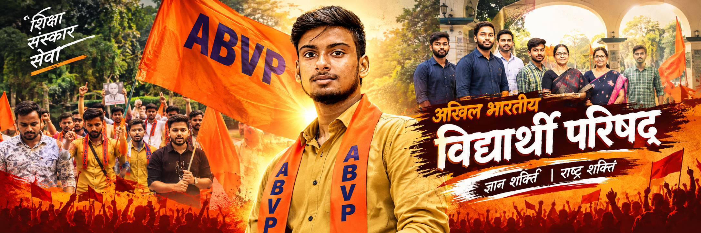

Student Leader | Social Activist | ABVP Activist
Khelo Bharat Sah-Sanyojak (Nagar Unit) • Chapra, Saran (Bihar)
Born on 3 August 2010 in Koini village, Manjha Block, Gopalganj, Bihar, I am a young student leader driven by a vision of social transformation, national development, and youth empowerment. My journey is rooted in the values of discipline, dedication, patriotism, and public service.
विश्व का सबसे बड़ा छात्र आंदोलन — ज्ञान, शील और एकता का वैचारिक अधिष्ठान
अखिल भारतीय विद्यार्थी परिषद की स्थापना 9 जुलाई 1949 को हुई थी। इसका उद्देश्य देश के विद्यार्थियों को केवल राजनीतिक नारों तक सीमित न रखकर 'राष्ट्र-पुनर्निर्माण' के महान कार्य से जोड़ना था। प्रोफेसर यशवंतराव केलकर जी ने संगठन को एक रचनात्मक, वैचारिक और अनुशासित दिशा प्रदान की, जिसके चलते वे परिषद के सच्चे शिल्पकार कहलाए। स्वतंत्रता के बाद जब देश वैचारिक संक्रमण के दौर से गुजर रहा था, तब अभाविप ने परिसरों में भारतीय संस्कृति और राष्ट्रीय अस्मिता की अलख जगाई। आज यह भारत के प्रत्येक कोने में विस्तृत होकर विश्व का सबसे विशाल राष्ट्रवादी छात्र आंदोलन बन चुका है।
ABVP का आधारभूत दर्शन है कि "छात्र कल का नहीं, आज का नागरिक है।" परिषद विद्यार्थियों को केवल भविष्य का नागरिक न मानकर वर्तमान में ही राष्ट्रहित के दायित्वों से जोड़ती है। इसका ध्येय वाक्य 'ज्ञान, शील, एकता' है, जो चरित्र निर्माण और शैक्षणिक उत्कृष्टता को रेखांकित करता है। संगठन दलगत राजनीति से पूरी तरह स्वतंत्र होकर सांस्कृतिक राष्ट्रवाद, सामाजिक समरसता और अखंड भारत की भावना में विश्वास रखता है। स्वामी विवेकानंद जी के ओजस्वी विचार और राष्ट्रभक्ति परिषद के कार्यकर्ताओं के जीवन का मुख्य पाथेय हैं।
अभाविप शैक्षणिक परिसरों में विद्यार्थियों के अधिकारों, पारदर्शी परीक्षा प्रणाली, उचित फीस संरचना और पुस्तकालय-छात्रावास जैसी मूलभूत सुविधाओं के लिए 24x7 तत्पर रहती है। यह केवल विरोध प्रदर्शनों तक सीमित न रहकर युवाओं के व्यक्तित्व विकास के लिए खेल, कला, साहित्य और विचार गोष्ठियों का सतत आयोजन करती है। छात्राओं की सुरक्षा और स्वावलंबन के लिए 'मिशन साहसी' जैसे राष्ट्रव्यापी आत्मरक्षा प्रशिक्षण चलाए जाते हैं। साथ ही प्राकृतिक आपदाओं, रक्तदान शिविरों और स्वच्छता अभियानों में समाज सेवा का अग्रदूत बनकर कार्य करती है।
छपरा के जयप्रकाश विश्वविद्यालय (JPU) में सत्र विलंब को दूर कराने, त्रुटिपूर्ण मार्कशीटों में त्वरित सुधार और अवैध फीस वसूली पर रोक लगाने में अभाविप का सतत जमीनी संघर्ष निर्णायक साबित हुआ है। पूर्वोत्तर राज्यों के युवाओं को देश के अन्य भागों से जोड़ने के लिए 1966 से संचालित SEIL (Students' Experience in Inter-state Living) प्रकल्प राष्ट्रीय एकता की अद्वितीय मिसाल है। छपरा के प्रसिद्ध राजेंद्र सरोवर के जीर्णोद्धार हेतु युवाओं का श्रमदान अभियान स्वच्छता का रोल मॉडल बना है। 'खेलो भारत' के माध्यम से जिले और प्रदेश स्तर पर हजारों छात्र खिलाड़ियों को मंच मिला है।
Photographs from campus rallies, student rights protests, and social welfare drives
Live synchronized from official Instagram account @AayushKashyap03
Live authentic statements via @AayushKashyap03
Dainik Bhaskar print & digital news coverage on student movements
छात्रहितों, कॉलेज समस्याओं या सामाजिक अभियानों से जुड़ने के लिए हमारे आधिकारिक चैनलों पर संदेश भेजें।
Social Media Reach
Connect across platforms with handle: @AayushKashyap03
Instagram
@AayushKashyap03
X (Twitter)
@AayushKashyap03
Facebook
@AayushKashyap03
YouTube
@Aayushkashyap03
WhatsApp Channel
Movement updates & bulletins